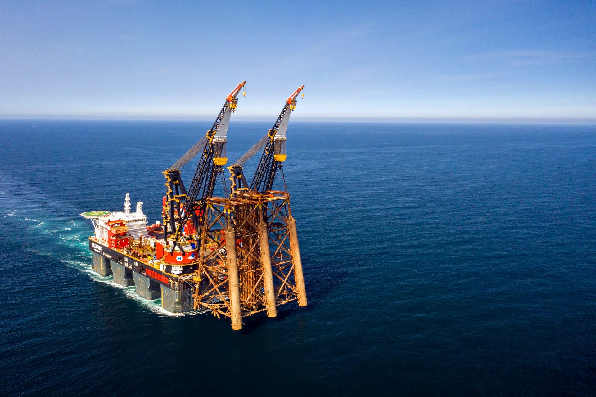
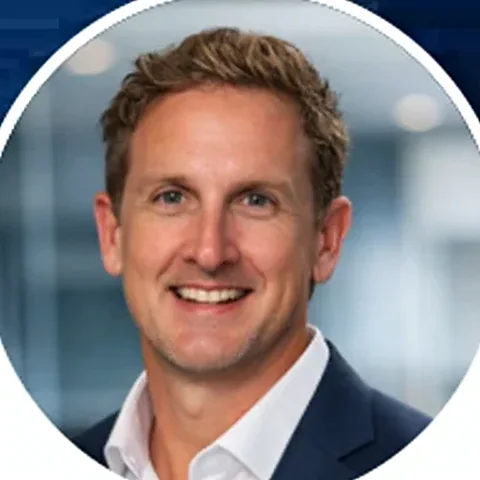
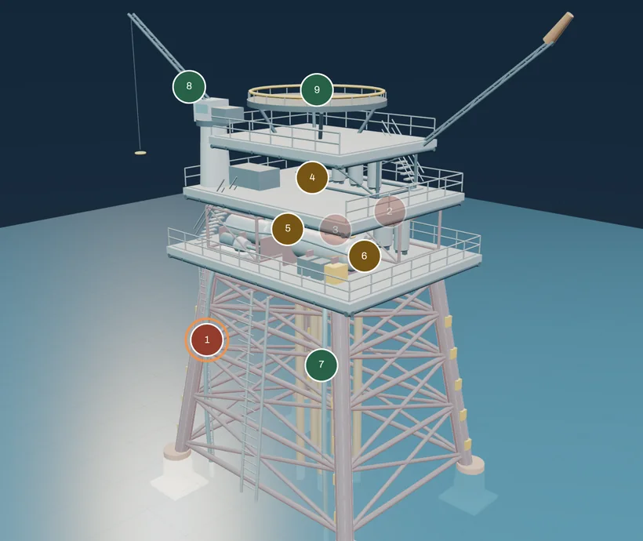

Engineering for the end of asset life
Independent decommissioning advice, from options assessment and cost planning through to execution support.
Sleipnir carrying a removed jacket. Photograph: Heerema Marine Contractors
Clients include
Specialist input at each stage of decommissioning
Engage Endura for a defined study, a specific engineering question or support across a wider programme. The scope, interfaces and required outputs are agreed at the outset.
-
Options and planning
Comparative assessments, business cases and decommissioning plans that connect the asset boundary to the required end state.
- Decision criteria and options comparison
- Business-case findings and recommendations
- Programme structure and close-out pathway
-
Engineering, cost and schedule
Engineering development and review of the quantities, assumptions and dependencies behind a proposed scope.
- Removal concepts and constructability considerations
- Basis-of-estimate inputs and quantity review
- Schedule logic and marine or disposal interfaces
-
Contracting and delivery support
Contracting strategy and owner’s engineering support, with technical responsibilities and handovers made explicit.
- Work packages and contract-model considerations
- Interface registers and tender strategy
- Method review and client-representative support
-
Regulatory pathways and asset evidence
Pathway mapping and documentation review aligned to the jurisdiction, asset and decision stage.
- Obligation and submission pathway mapping
- Source-register review and evidence tracking
- Documentation gaps ranked by decision impact
What the work produces
The deliverable set follows the agreed engagement. Findings, source records, assumptions and unresolved items stay visible for the people taking the work forward.
- Study report
- Options, assessment findings, limitations and recommended next actions.
- Technical basis
- Scope boundaries, assumptions, methods and the interfaces affecting execution.
- Commercial inputs
- Cost and schedule basis, work packaging and technical tendering inputs.
- Action plan
- Priorities, responsibilities, dependencies and information still required.
The method has to work beyond the study
Removal concepts depend on the temporary states, marine interfaces and receiving conditions as well as the final lift or cut. These constraints belong in the planning and cost basis.
From offshore recovery to onshore dismantling

Topsides removalSingle lift or piece small concepts, lift points, rigging and the temporary states either side of the lift. 
Jacket removal and transportCutting below the seabed, lift sequence, sea fastening and transport to the receiving yard. 
Subsea infrastructure and pipelinesWhat is recovered, what can remain, and the cutting and recovery method for each item. 
Onshore dismantling and recyclingLoad-in, dismantling sequence, waste segregation and receiving-facility requirements.


Photographs: Heerema Marine Contractors (topsides, jacket), Oceaneering (opens in a new tab) (subsea) and Able UK (opens in a new tab) (onshore, CC BY-SA 4.0 (opens in a new tab), edited).

Independent advice with direct technical involvement
Endura brings execution experience into front-end planning and engineering review.
Led by Jed van Iersel, the consultancy supports operators and delivery teams where uncertain scope, inherited records or unresolved interfaces are preventing progress. Jed has worked offshore since 2003: deck, rigging and lift supervision, then offshore construction management, then decommissioning management, before founding Endura.
The role is independent and vendor-neutral. Options are tested against the client’s objectives and the physical, marine and disposal constraints of the asset.
More than 20 years offshore
- 2025 to nowDirector and Principal ConsultantEndura Decommissioning
Decommissioning planning, ARO revision, method assessment and execution representation for operators.
- 2022 to 2025Senior Project Manager, Decommissioning Manager, then Head of Strategy and Growth, DecommissioningLiberty Industrial
Offshore and onshore decommissioning projects from FEED through execution. As Decommissioning Manager, led a team of more than 40 and acted as senior interface with operators and regulators.
- 2021Construction Project Manager, client sideAir Liquide
Decommissioning of the Liquid Oxygen Plant at Gladstone, Queensland, for relocation to India.
- 2021Deputy Offshore Construction ManagerMcDermott
INPEX Ichthys LNG Phase 2a, offshore Western Australia: procedures for the umbilicals, risers and flowlines scope.
- 2013 to 2021Offshore Construction Manager and Shift SupervisorSapura Energy
Offshore construction and maintenance projects in several regions, with around 200 indirect reports.
- 2003 to 2013Deck, rigging and lift supervisionTechnip, Sapura Acergy, SapuraClough, Helix, Heerema, Leighton Offshore
Lifting plans for lifts of up to 4,000 tonnes on Woodside’s North Rankin B platform. Salvage of the typhoon damaged Huizhou FPSO subsea system, offshore China, in 115 metres of water.
Roles and projects from Jed’s previous employment, as listed on his professional profile. They are experience from previous roles, not Endura projects. Full career record
Check the basis before you commit to it
These tools run in your browser. Answers and selections are not transmitted.

Asset explorer
Rotate an offshore platform or an onshore plant and select an evidence domain. The explorer connects documentation gaps to the physical systems, decisions and next actions they affect.
Illustrative cutaway, not to scale. The scores are a synthetic demonstration, not an assessment of an actual asset.
- Liability self-checkAn indicative first pass at where inherited information may be limiting confidence.
- ARO defensibility checklistReview whether an estimate can be traced from the asset record to the number.
- Decision walkthroughFollow an illustrative decision from its initial question to the supporting brief.
Engineering knowledge and references
All technical resources- Cost basisThe evidence behind a defensible closure estimate
- Temporary statesThe temporary state can govern the lift
- Inherited evidenceInherited asset records: find the evidence that changes the decision
- Regulatory recordsHow to read a NOPSEMA record without overreading it
- Scope interfacesClosure decisions are often won or lost at the interfaces
- Estimate revisionsEstimate drift: explain what changed before explaining the total
The national picture
AUD 43.6 billion
Estimated cost to decommission existing offshore oil and gas infrastructure within the study’s Commonwealth-waters scope, 2025 to 2070, in real 2025 dollars. An indicative portfolio estimate that assumes full removal.
The national figure sets the context. The decision basis for each asset still has to be established from its records, assumptions and interfaces. Endura works where that basis is set: in the study, the estimate basis and the removal method, while the scope can still change.
Offshore records, edition 01
Ten official records, each with its published status
An independent, source-cited register of selected NOPSEMA decommissioning records. Each entry separates scope, assessment outcome and reported commencement, with a link to the original source.
Of the ten, eight plans are accepted and two are under assessment.
Accepted is an environment-plan outcome, not evidence that physical decommissioning is complete. Source review 18 September 2026. Selected records, not a national census or a list of Endura projects.
decomm.ai: Asset documentation intelligence for decommissioning
Explore how inherited records and documentation gaps can inform the engineering basis. decomm.ai is presented separately from Endura’s consultancy services. The public demonstration uses illustrative data and does not calculate an accounting provision.
Clients
Tell us about the asset, the scope and the timing
Start with the question your team needs to resolve and the information available.